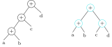

Method
- Associativity + commutativity: , height 3, becomes , height 2. In general a chain of
 operands becomes a balanced tree of height
operands becomes a balanced tree of height  .
. - Arrival-time aware: with different arrival times, combine the earliest operands first (Huffman-like); the latest signal enters the last operator, nearest to the output.
- Distributivity: , height 4 with 2-input operators, becomes , height 3, with one more multiplication. It trades area for height; general rule: expand when the critical input is buried inside a factor.
Derivation
A binary operator tree of height has at most leaves, so operands need , and the balanced tree reaches the bound. With delay  per operator, the chain costs , the tree .
per operator, the chain costs , the tree .
Picture

Height 3 versus height 2 with the same three adders.
Intuition
Do independent work in parallel; if you have to wait for a late signal, prepare everything else meanwhile.
Pitfall
For floating-point arithmetic associativity does not hold exactly: rebalancing changes rounding. Hardware tools apply it only to integer and Boolean operators.